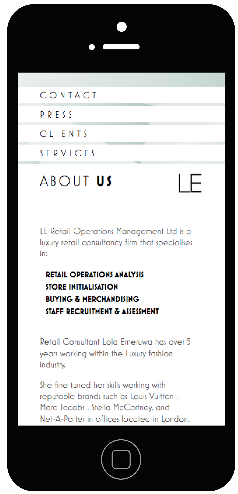
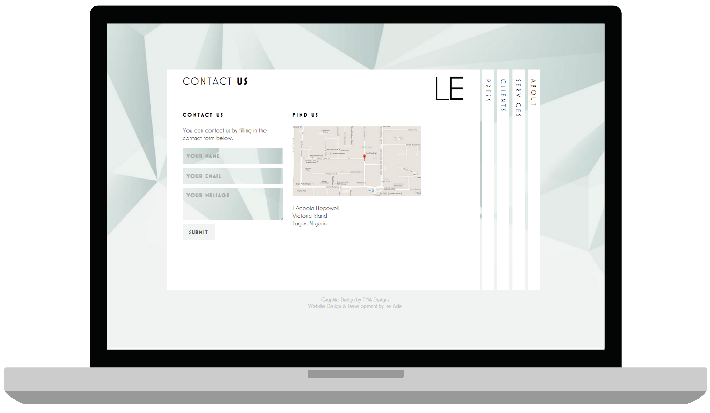
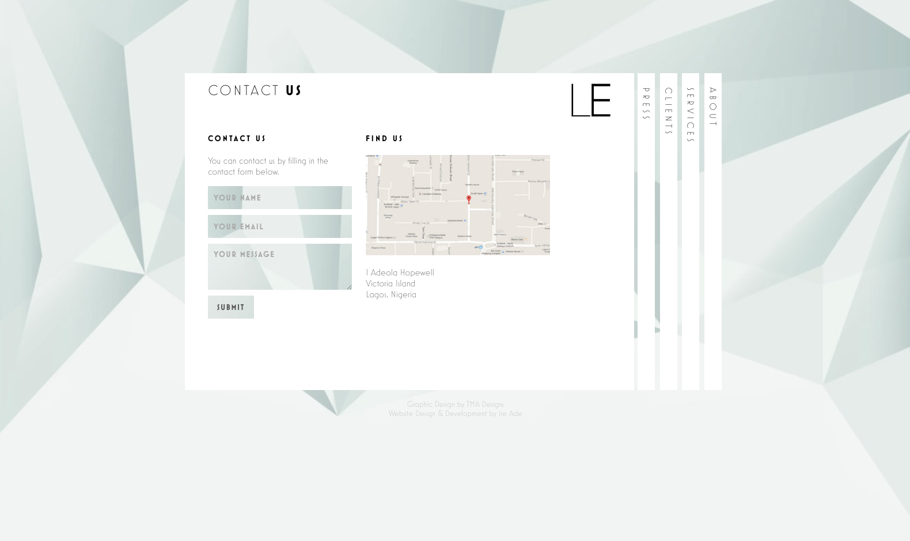
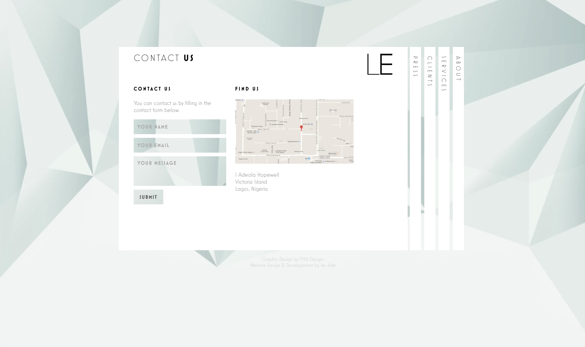

LE Retail Operations Management is a luxury retail consultancy firm.
I was involved as both the designer and developer on this project. Although the deisgn of the website was my own, the graphic design (Logo and Background Design) was created by TMA Designs.
The concept of the design was to create a single page website that didn’t feel like the typical single page website, that being one long page. Because the actual content was so minimal, I was able to go for a more unique design. I also had the additional constraint of not being able to use any images. This was a bit of a struggle for me, as I love to incorporate images in my designs, but it forced me to think differently and come up with this unique layout.
Desktop

 
